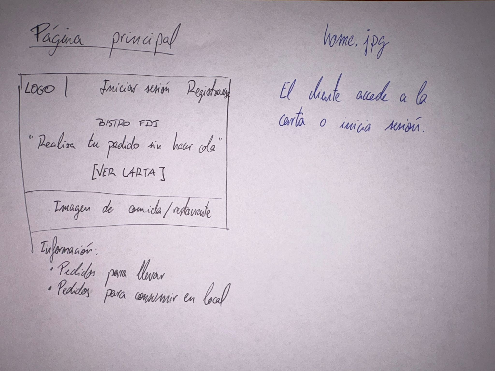
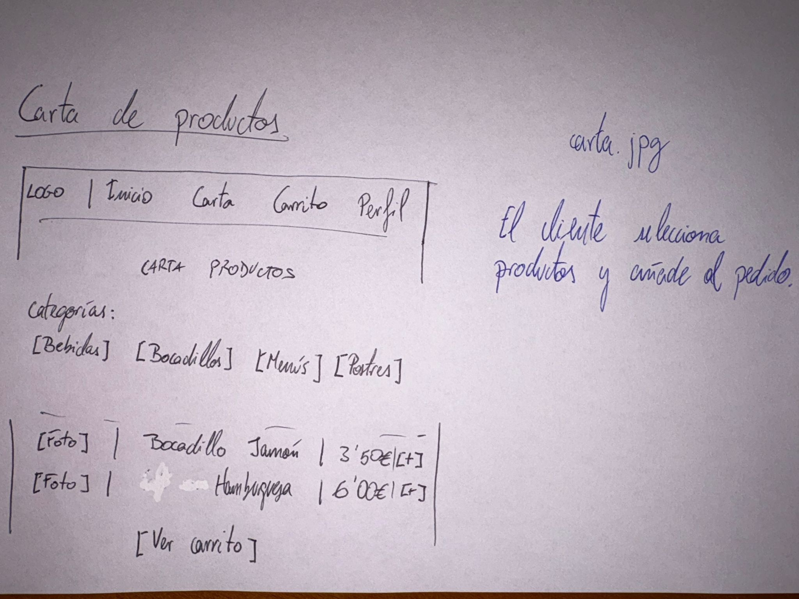
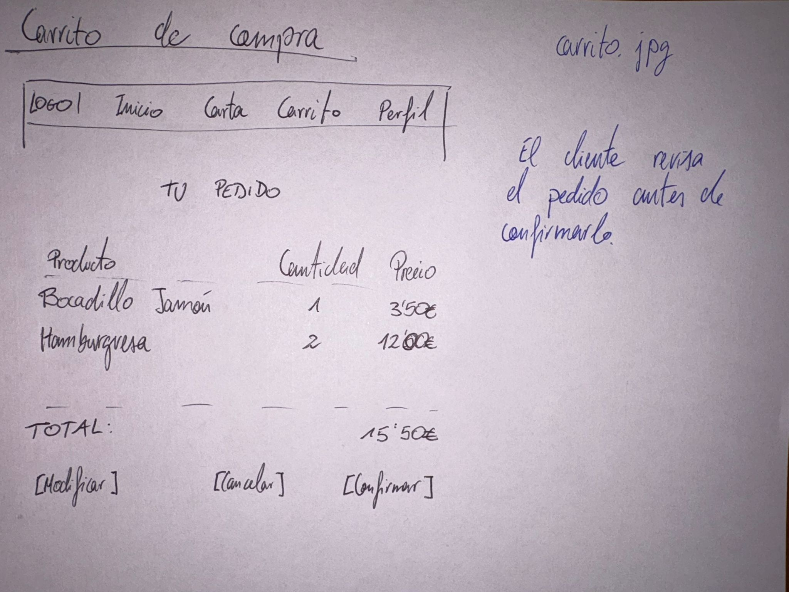
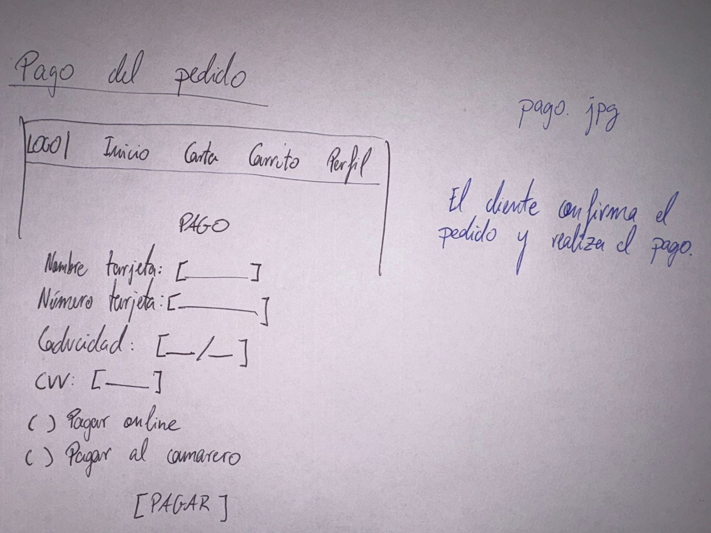
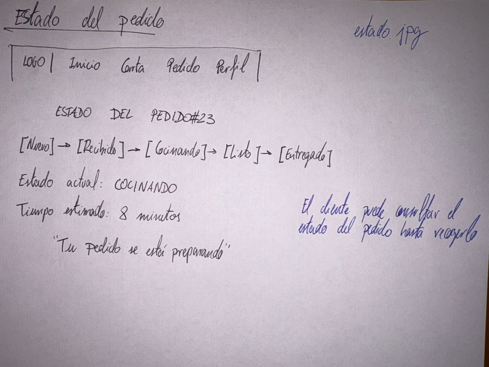

En esta sección se presentan los bocetos preliminares de la aplicación web Bistro FDI. La aplicación permitirá a los clientes realizar pedidos desde su móvil o portátil y al personal del restaurante gestionar su preparación y entrega. Los bocetos representan la estructura de las pantallas principales y el flujo de navegación.

Pantalla inicial de la aplicación. El usuario puede iniciar sesión o registrarse. También permite acceder a la carta de productos del restaurante.
Desde aquí el cliente comienza el proceso de pedido.

Se muestran las categorías de comida (bebidas, bocadillos, menús, etc.). El cliente puede seleccionar un producto y añadir unidades al carrito.
Navegación: El cliente accede desde la página principal y selecciona productos.

En esta pantalla el cliente revisa los productos seleccionados, modifica cantidades o elimina productos antes de confirmar el pedido.
Desde aquí el cliente puede confirmar o cancelar el pedido.

El usuario introduce los datos de pago o indica que pagará al camarero. Una vez confirmado, el pedido pasa a estado "Recibido".
Pasos principales:

El cliente puede consultar el estado de su pedido: Nuevo, En preparación, Cocinando, Listo o Entregado.
Tras completarse, el cliente recoge su pedido en el restaurante.
Estos bocetos representan un primer diseño conceptual de la aplicación. Podrán modificarse durante el desarrollo del proyecto.